The paper introduces the R package CovEsts, which implements several nonparametric estimators for the autocovariance function. First, it presents the theoretical foundations of the implemented estimators, their properties, assumptions, and potential limitations. Next, it outlines the structure of the package and its key functions, including several methods for estimating autocovariance functions, constructing corresponding bootstrap confidence regions, and correcting the provided estimators. The package also includes diagnostic tools, such as several metrics for comparing estimators, and additional functions for broader use. The article illustrates a high degree of flexibility of the package in the selection of function parameters and the tuning of the estimators. Applications of selected estimators and package functions are illustrated using simulated data, yearly sunspot counts, and US unemployment increments data.
For a stationary time series \(X(j)\), \(j = 0, 1, \dots,\) the autocovariance function is used to measure dependencies between observations separated by a lag \(h.\) This function appears in various theoretical results and statistical applications. For example, in the Gaussian case, the mean function and autocovariance function describe the time series entirely. Furthermore, the autocovariance function is used in the estimation of parameters for an autoregressive time series (Brockwell and Davis, 1991, 8.1), model identification, and Kriging (Cressie, 1993, 3.2). It is also utilised in various non-statistical fields such as digital signal processing, image analysis (Bull and Zhang, 2021, 3.2), and quality assessment (Massart et al., 2003), just to name a few. Therefore, accurate estimation of the autocovariance function is an important problem in numerous statistical and data science applications.
Surprisingly, despite several other approaches in the literature, the
classical standard estimator of the autocovariance function remains the
predominant choice among practitioners. Many of them are unaware of its
limitations or of more accurate alternatives developed in the recent
literature. This is evident in statistical software, where the majority
of R and Python packages only provide a wrapper function for the
classical estimator. For example, the classical autocovariance estimator
realised by the stats::acf function in R, is used by
TSA (Chan and Ripley, 2022 and Cryer and Chan, 2008),
astsa (Stoffer and
Poison, 2024, and Shumway and Stoffer, 2025),
sarima (Boshnakov and
Halliday, 2025) and
forecast (Hyndman and
Khandakar, 2008). The package
forecast also
contains a tapered autocovariance estimator, taperedacf(), which is
based on the results in McMurry and Politis (2010); Hyndman (2015).
The motivation for the package CovEsts (Bilchouris and Olenko, 2025a) was that many nonparametric autocovariance estimators appeared only in research papers with no R or Python code for their computation. Also, as will be discussed in Section 2, different estimators have different theoretical properties, which influence when they should be used. We have not found any packages dealing with potential issues regarding estimation and their corrections, apart from ncf (Bjornstad, 2022) implementing the positive-definite adjustment from Hall et al. (1994). Further, no existing packages provide a unified interface and consistent data/output structure across various autocovariance estimators.
Nonparametric autocovariance estimators are particularly important due to their minimal reliance on distributional assumptions, offering greater flexibility compared to parametric approaches. Additionally, they are often used as a preliminary step in parametric modelling, where a restricted set of predefined autocovariance models is fitted to a nonparametric estimate. For example, gstat (Gräler et al., 2016) does this for the (semi-)variogram. Parametric estimation was not included in CovEsts, as this functionality for specific parametric models is already provided by existing packages.
We intend this package to be used by practitioners working with time
series and spatial statistics, with applications in areas such as
finance, signal processing, and climate research. We assume basic
knowledge of R for using the functional interface of the package.
However, more specialised R knowledge may be required for advanced
inference and working with user-defined objects.
In the article, we will interchangeably use the terms random process and time series, where the former is for samples at arbitrary time locations, and the latter is used when sampled values are on a uniform sampling grid.
The paper is structured as follows. Section 2 introduces the nonparametric autocovariance estimators and some general approaches for modifying autocovariance estimators. It discusses the theoretical properties of the estimators and the drawbacks one should be aware of. Section 3 presents the structure of the package and selected main functions. Section 4 provides applications to three data examples: a simulated Gaussian process, yearly sunspot counts, and unemployment data, sourced from the US Bureau of Labor Statistics. Example 4 empirically studies the computational complexity of the estimators by comparing their memory and time usage.
There are several nonparametric autocovariance function estimators in the literature, see the reviews in Cressie (1993, 2.4), Hall et al. (1994), Cuevas et al. (2013), Dürre et al. (2015) and Bilchouris and Olenko (2025b). This section briefly introduces the estimators that were implemented in the package and mentions some of the theoretical drawbacks to deal with when applying them.
For a weakly stationary real-valued time series \(X(j)\), \(j = 1, 2, \dots ,\) the autocovariance function is defined as \[\text{C}(h) \coloneq \text{E}\left[\left(X(j) - \overline{X}\right)\left(X(j + h) - \overline{X}\right)\right].\] and the corresponding autocorrelation at lag \(h\) is \(\rho(h):=C(h)/C(0).\)
Another related function used in the analysis of dependencies is the semivariogram. It uses the second-order moments of increments, \[\gamma(h) := \frac{1}{2} \text{Var}\left[X(j) - X(j + h) \right] ,\] The package CovEsts mainly focuses on estimating \(C(\cdot)\) as, under the assumption of weak stationarity, the semivariogram can be determined using the autocovariance function through the following relation \[\begin{equation} \label{eqn:variogram} \gamma(h) = C(0) - C(h). \end{equation} \tag{1}\] This relation is not necessarily true when considering the estimated functions or if the semivariogram is unbounded (Chilès and Delfiner, 2012 and Bilchouris and Olenko, 2025b).
Another function used in time series analysis is the partial autocorrelation function, \(\phi_{h,h}.\) Unlike the autocorrelation function, it measures the dependencies between observations \(X(t)\) and \(X(t+h)\) after removing the effects of the intermediary lags. The partial autocorrelation function at lag \(h\) can be computed using the Durbin-Levinson algorithm (Durbin, 1960) \[\begin{equation} \label{eq:durbin} \phi_{h, h} \coloneq \frac{\rho(h) - \sum_{k=1}^{h-1} \phi_{h - 1, k} \rho(h - j)}{1 - \sum_{k=1}^{h-1} \phi_{h - 1, k} \rho(k)} \end{equation} \tag{2}\] where \(\phi_{h, k} := \phi_{h - 1, k} - \phi_{h, h} \phi_{h - 1, h - k}\) for \(k = 1, 2, \dots, h - 1,\) and \(\phi_{1, 1} := \rho(1)\). Unlike the autocorrelation function, there is no zero lag for the partial autocorrelation function. In stats::pacf, the formula ((2)) uses the classical autocorrelation estimator, but any autocorrelation estimate can be supplied in the package CovEsts.
The first two estimators implemented in CovEsts are well-known and the most widely used. They differ only by the normalising constants: \[\begin{equation} \label{eq:std_est} \widehat{C}^{*}(h) \coloneq \frac{1}{N-h} \sum_{j=1}^{N - h} \left(X(j) - \overline{X}\right) \left(X(j+h) - \overline{X}\right) \end{equation} \tag{3}\] and \[\begin{equation} \label{eq:std_est_pd} \widehat{C}^{**}(h) \coloneq \frac{1}{N} \sum_{j=1}^{N - h} \left(X(j) - \overline{X}\right) \left(X(j+h) - \overline{X}\right) , \end{equation} \tag{4}\] where \(X(j)\) represents values of an observed time series, \(\overline{X}\) is the sample mean of the time series, \(N\) is the length of the observation period and \(0 \leq h \leq N-1\) is the lag for which the autocovariance function is estimated at (Yaglom, 1987, sec. 3.17). These estimators are typically used for equally sampled values at integer time moments or those with a constant time difference.
Even for these classical estimators, there are several issues that are not expected when applying autocovariance functions in theoretical statistical inference. The first estimator (3) is unbiased if the mean \(\text{E}[X(j)]\) is known and used instead of \(\overline{X},\) but is biased otherwise (Brockwell and Davis, 2016). This estimator is not positive-definite. The estimator (4) is biased but is positive-definite. This means that the second estimator gives a true autocovariance function, whilst the first only gives an estimate of a function similar to an autocovariance function.
Another, less-known drawback is that when considering the sum over all lags for the estimated autocorrelations in (4), the sum is always equal to \(-1/2\), regardless of the sampled values, see Hassani (2009), Hassani et al. (2012) and Bilchouris and Olenko (2025b). This causes a problem, especially when considering estimation over long time intervals or modelling long-range dependence, as the sum of estimated autocorrelation values is always equal to \(-1/2\). Even though the estimators have desirable theoretical properties for a fixed \(h,\) when \(N \rightarrow \infty ,\) the constant sum necessitates substantial departure of the estimates from the true autocovariance values if a large range of \(h\) is considered for a fixed \(N.\)
The next estimator, proposed in Hall and Patil (1994) and Hall et al. (1994), applies the kernel regression of pairwise autocovariances to estimate the autocovariance function, \[\begin{equation} \label{eq:hall_est} \widehat{C}_{H}(t) \coloneq \frac{\displaystyle \sum_{i=1}^{N} \sum_{j=1}^{N} \check{X}_{ij} K\left( \left(t - \left(t_{i} - t_{j}\right)\right) / b \right) }{\displaystyle \sum_{i=1}^{N} \sum_{j=1}^{N} K\left( \left(t - \left(t_{i} - t_{j}\right)\right) / b \right) }, \end{equation} \tag{5}\] where \(t, t_{i}, t_{j} \in \mathbb{R},\) \(\check{X}_{ij} \coloneq \left(X(t_{i}) - \overline{X}\right) \left(X(t_{j}) - \overline{X}\right)\), \(i, j = 1, \dots, N,\) \(K(\cdot)\) is a kernel which has the properties of a symmetric probability density and \(b > 0\) is some bandwidth. A variant of this estimator, proposed in (Hall et al. 1994), brings the initial estimator down to zero linearly between time moments \(T_{1} > 0\) and \(T_{2} > T_{1},\) \[\begin{equation} \label{eq:hall_trunc} \widehat{C}_{1}(t): = \begin{cases} \widehat{C}_{H}(t), & 0 \leq t \leq T_{1} \\ \widehat{C}_{H}\left(T_{1}\right) \left(T_{2} - t\right) \left(T_{2} - T_{1}\right)^{-1}, & T_{1} < t \leq T_{2} \\ 0 , & t > T_{2} . \end{cases} \end{equation} \tag{6}\] This estimator cannot be used for long-memory time series as it vanishes at \(T_{2}\), but is a better choice when estimating a short-range dependent autocovariance function, as the estimate will go to zero. Unlike estimators (3) and (4), these estimators can be applied for arbitrary observation grids and lags.
The estimators given by (5) and (6) are not necessarily positive-definite, and thus not valid autocovariance functions. Two corrections to make them positive-definite were proposed in Hall and Patil (1994) and Hall et al. (1994).
The first correction method computes the Fourier transform of (5) to obtain the corresponding spectral density. Then, it makes any negative values in the spectral density equal to zero, and performs the inverse Fourier transform to obtain a positive-definite estimate of the autocovariance function. The modification of the spectral density that corresponds to \(\widehat{C}_{H}(\cdot)\) can be expressed as \(\widetilde{\mathcal{F}}(\theta) := \max(\widehat{\mathcal{F}}(\theta), 0)\) for every frequency \(\theta ,\) where \(\widehat{\mathcal{F}}( \cdot )\) and \(\widetilde{\mathcal{F}} ( \cdot )\) denote the original and modified spectral densities.
The second correction method considers manipulating the Fourier transform again. However, it finds the smallest frequency corresponding to a negative value in the spectral density. Then, it sets all values in the spectrum to zero whose corresponding frequencies are larger than the smallest frequency. Then, the inverse Fourier transform is taken. The process of selecting the frequency and modifying the spectrum is as follows. Let \(\widehat{\theta} := \inf \left\{ \theta > 0 : \widehat{\mathcal{F}} \left( \theta \right) < 0 \right\}.\) Then the spectral density is modified as follows, \(\widetilde{\mathcal{F}}(\theta) := \widehat{\mathcal{F}}( \theta)\boldsymbol{\mathbf{1}}\left(\theta < \widehat{\theta}\right),\) where \(\boldsymbol{\mathbf{1}}(A)\) is the indicator function of a set \(A.\) The drawback is that this correction can fail to produce a meaningful result if \(\widehat{\theta}\) is a small frequency, as the modified estimator of the autocovariance function consists of a sum of only a few cosines. Both of these correction methods can be applied to any estimator of the autocovariance function, one is not restricted to just estimators (5) and (6).
The following estimator, proposed in Dahlhaus and Künsch (1987), takes the edge effect into account. The edge effect reflects the situation that points closer to the boundaries of an observation region can have neighbouring observations that are outside of the study region. Thus, some dependencies may not be properly reflected, which can introduce bias. To deal with this, the estimator assigns weights for each location depending on how close it is to the boundary, where lower weights are given to locations closer to the boundaries: \[\begin{equation} \label{eq:tapered_est} \widehat{C}^{a}_{N}(h) \coloneq \frac{\displaystyle \sum_{j = 1}^{N - h} \left( X(j) - \overline{X}\right) \left( X(j + h) - \overline{X} \right) a\left( (j - 1/2)/N; \rho \right) \; a \left( (j + h - 1/2)/N; \rho \right) } {\displaystyle H_{2, N}(0) }, \end{equation} \tag{7}\] where the normalising factor is \[H_{2, N}(0) := \sum_{s=1}^{N} a ( (s - 1/2)/N; \rho )^{2} ,\] \(a(\cdot; \cdot)\) is a taper function on the interval \([0, 1]\) with the smoothness parameter \(\rho \in (0, 1],\) \[a(u; \rho) := \begin{cases} w(2u/\rho) ,& 0 \leq u < \frac{1}{2}\rho, \\ 1 ,& \frac{1}{2} \rho \leq u \leq \frac{1}{2}, \\ a(1-u; \rho) ,& \frac{1}{2} < u \leq 1, \end{cases}\] and \(w(\cdot)\) is a continuous nondecreasing function on \([0, 1]\) with \(w(0)=0\) and \(w(1)=1.\) We will refer to \(w(\cdot)\) as a window function. The estimator (7) is positive-definite and biased, but the bias is negligible asymptotically. This estimator is applied to observations on an integer grid.
Unlike the other estimators, the following estimator does not use
observations directly. It is based on an approximation of
\(\widehat{C}(\cdot)\) by completely monotone basis functions proposed in
Choi et al. (2013)
\[\begin{equation} \label{eq:splines_est} \widehat{C}^{B}(h) \coloneq \sum_{j=1}^{m + p} \beta_{j} f_{j}^{(p - 1)} \left(h^{2}\right) , \end{equation} \tag{8}\] where \(\beta_{j} \geq 0\), \(f_{j}^{(l)} (x) \coloneq \int_{0}^{1} (m + 1) t^{x} B_{j + 1}^{(l)} (t) \text{d} t,\) \(B_{j}^{(l)}(\cdot)\) is the \(j^{\text{th}}\) B-spline of order \(l\) and \(j = 1, 2, \dots , m + p\). The constants \(\beta_{j}\) are chosen via weighted least squares, where the objective function is \[\sum_{i = 1}^{L} w_{i} \left( \widehat{C}(h_{i}) - \sum_{j=1}^{m + p} \beta_{j} f_{j}^{(p - 1)} \left(h_{i}^{2}\right) \right)^{2} ,\] \(\widehat{C}(\cdot)\) is an autocovariance function estimator, \(\{ h_{1} , \dots , h_{L} \}\) is a set of lags and \(\{ w_{1}, \dots , w_{L} \}\) is a set of weights. (Choi et al. 2013) uses (3) as \(\widehat{C}(\cdot)\), however, one can use any autocovariance estimator. For the choice of weights \(w_{i} = \left(N-h_{i}\right) / \left(1 - \widehat{C}(h_{i})\right)^{2}\) was proposed in (Cressie 1985).
This estimator can calculate the estimated autocovariance at an arbitrary lag once the fitting process is done. However, the lags used during the fitting process should be chosen such that they are the same as in \(\widehat{C}(\cdot).\) As estimator (8) is constructed using completely monotone basis functions, and \(\beta_{j} \geq 0,\) it is nonnegative. This estimator is a positive-definite function. Further, it is also bounded from below by zero, meaning this estimator cannot be used when the autocovariance is below zero, and due to the monotonicity, it cannot be used if cyclicality is present.
The next estimator is simply a modification of any estimator. It was proposed to remove estimation wave artefacts (Yaglom, 1987, sec. 3.17). The waves are present in various estimated autocovariance functions and are more prominent as the estimation lag increases, as fewer points are available to compute the autocovariance function. This estimator also helps to reduce constant summation effects, which were discussed earlier for estimators (3) and (4). It is defined as \[\begin{equation} \label{eqn:kernel_correction} \widehat{C}_{T}^{(a)}(h) \coloneq a_{T}(h) \widehat{C}(h) , \end{equation} \tag{9}\] where \(a_{T}(\cdot)\) is a kernel function, which approaches zero as \(\left| h \right|\) increases and \(\widehat{C}(\cdot)\) is any autocovariance estimator (Yaglom 1987, sec. 3.17). Typically, \(a_{T}(h) \coloneq a(h / N_{T})\), where \(N_{T}\) is some constant, usually 10% of the number of observations. If \(a_{T}(\cdot)\) is chosen as positive-definite and \(\widehat{C}(\cdot)\) is positive-definite, then \(\widehat{C}_{T}^{(a)}\) will also be positive-definite.
A combination of (4) and (9) can also be used to reduce the waves in the estimate and guarantee a finite range of dependencies: \[\begin{equation} \label{eqn:kernel_correction_std_pd} \widehat{C}_{T}^{**}(h) = a_{T}(h) \widehat{C}^{**}(h) . \end{equation} \tag{10}\]
A linear shrinkage correction method, introduced by Devlin et al. (1975), adjusts the estimated autocorrelation matrix \(\boldsymbol{\mathbf{R}}\) through the following transformation \[\begin{equation} \label{eqn:linear_shrinking} \widetilde{\boldsymbol{\mathbf{R}}} \coloneq \lambda \boldsymbol{\mathbf{R}} + (1 - \lambda)\boldsymbol{\mathbf{I}}_{p} , \end{equation} \tag{11}\] where \(\widetilde{\boldsymbol{\mathbf{R}}}\) is the shrunken autocorrelation matrix, \(\lambda \in [0, 1]\) is the shrinking coefficient and \(\boldsymbol{\mathbf{I}}_{p}\) is the \(p \times p\) identity matrix, often called the shrinkage target (Rousseeuw and Molenberghs, 1993). \(\lambda\) is chosen as the maximal value for which \(\widetilde{\boldsymbol{\mathbf{R}}}\) remains positive-definite.
The moving block bootstrap, independently developed by Künsch (1989) and Liu and Singh (1992), allows for the resampling of time series data with dependencies without relying on any parametric assumptions (Lahiri 2003, 2.5). For a time series \(X(1), \dots , X(n)\), first, construct \(n - \ell + 1\) blocks of length \(\ell,\) \(\mathcal{B}_{i} = \left( X(i), \dots , X(i + \ell - 1) \right),\) for \(i = 1, \dots , n - \ell + 1.\) Then, the blocks are sampled in the following way. Let \(I_{1}, \dots, I_{k}\) be \(k\) independent and identically sampled values, from the discrete uniform distribution on \(\left\{ 1,\dots, n - \ell + 1 \right\},\) which are the block indices, that is \(\mathcal{B}_{I_{i}}.\) To construct a bootstrapped time series, join the randomly sampled blocks \(\mathcal{B}_{I_{1}}^{*}, \dots, \mathcal{B}_{I_{k}}^{*},\) resulting in the time series \(X^{*}(1), \dots, X^{*}(k\ell),\) where \(*\) denotes the sampled versions of the blocks and time series (Lahiri 2003, 2.5). If \(k\ell>n,\) the moving block sampled time series is truncated at \(n.\)
The moving block bootstrap suffers from a boundary effect, where lesser weights are given to observations at the beginning and end of the sampled time series (Lahiri 2003, 2.7). A modified method to construct bootstrap samples is the circular bootstrap, proposed by Politis and Romano (1992), which addresses this issue. Instead of the time series \(X(1) , \dots , X(n)\) being observed on the line, it is considered to be observed on the circle. This results in the observation \(X(n + k)\) being the same as \(X(k)\) for \(k = 1, \dots , n.\) For \(i = 1, \dots , n ,\) blocks are constructed in a similar, but circular fashion. For example, the block \(\mathcal{B}_{n - \ell + 2} = \left(X(n - \ell + 2) , \dots , X(n), X(n + 1) \right)\) is the same as \(\left(X(n - \ell + 2) , \dots , X(n), X(1) \right) .\) The procedure to construct a circular bootstrap time series is the same as for the moving block bootstrap. However, the block indices are instead sampled from \(\{1, \dots , n\}\).
The block length parameter choice is flexible, although some guidelines exist, see Hall et al. (1995), Politis and White (2004) and Arteche (2024). For example, a block length \(\ell \sim C n^{1/k}, k = 3, 4, 5,\) is recommended in (Hall et al. 1995). For a time series with long memory, the block bootstrap may give inconsistent results, see Lahiri (1993). In such cases, a larger block size should be chosen to capture the dependency structure.
In the context of autocovariance estimation in this paper, first, a block bootstrap method is used to sample multiple time series. Then, a specified autocovariance estimation method is applied to compute the estimated autocovariance for each sampled time series. The bootstrap estimate is the average of all individual estimators, and the corresponding bootstrap confidence region is constructed from the bootstrap confidence intervals at each lag \(t\) of the considered autocovariance estimate.
Table 1 summarises some properties of the estimators presented in this section, including their input requirements, assumptions of grid regularity, positive-definiteness, computational efficiency, suitability for long-memory processes, and disadvantages that applied users should be aware of.
Additional theoretical results and formulas will be introduced later when needed.
| Estimator | Input | Grid | P.d. | Computational efficiency |
Suitable for long memory |
Disadvantages |
|---|---|---|---|---|---|---|
| Standard (3) | Data | Regular | No | Fast | No | Constant Cov.est. summation |
| Standard (4) | Data | Regular | Yes | Fast | No | Constant Cov.est. summation |
| Hall’s (5) | Data | Both | No | Slow/unstable | Yes | Slow for long time series |
| Hall’s Truncated (6) | Data | Both | No | Slow/unstable | No | Slow for long time series |
| Hall’s Correction (i) | Cov.est. | Regular | Yes | Fast | No | Inflates est.variance |
| Hall’s Correction (ii) | Cov.est. | Regular | Yes | Fast | No | May degenerate to few cosines |
| Tapered (7) | Data | Regular | Yes | Fast | Yes | Tapering may cause bias |
| Splines (8) | Data & Cov.est. |
From Cov.est. | Yes | Slow/unstable | No | Cov.est. is always nonnegative |
| Kernel Correction (9) | Cov.est. | Regular | No | Fast | No | Removes long memory nature |
| Kernel Correction (10) | Cov.est. | Regular | No | Fast | No | Removes long memory nature |
| Shrinkage Correction (11) | Data | Regular | No | From Cov.est. | Target dependent |
High bias if wrong target |
| Moving block bootstrap average |
Data | From Cov.est. | No | From Cov.est. | From Cov.est. | Weighting boundary effect |
| Circular bootstrap average |
Data | From Cov.est. | No | From Cov.est. | From Cov.est. | Duplicated information, Edge jumps |
This section provides a high-level overview of the package, including the types of functions and their relations, function structures, and the parameters of selected functions.
The package CovEsts
consists of several functions to compute the autocovariance estimators
discussed in the previous section. For the
CovEsts package, we
deliberately aimed to keep the number of package dependencies minimal,
so it only uses packages that come with base R, stats for acf,
optim and fft, graphics for legend, lines and polygon, and
parallel for parLapply, makePSOCKcluster, clusterExport and
stopCluster. This was done to make the package self-contained.
Figure 1 groups the main functions depending on their functionality and relations to the autocovariance estimation functions. The main group, Autocovariance Estimators, consists of the autocovariance function estimators discussed in Section 2, whilst the remaining groups are used for intermediary and complementary calculations, except those that compare autocovariance estimates. Note that this figure does not include all functions in the package. In particular, non-user-facing functions are omitted.
In the main group, there are nine functions that estimate the autocovariance function or its modifications. As the parameters are often shared or similar between the estimator functions, to avoid repetition, only one set of parameters is shown in Table 2. As can be seen from the table, the functions are vectorised.
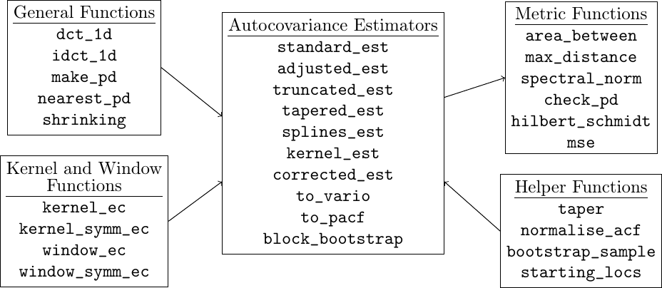
| Parameter | Explanation |
|---|---|
X |
A vector representing observed values of the time series. |
x |
A vector of lags. |
t |
The arguments at which the autocovariance function is calculated. |
T1 |
The first truncation point, \(T_{1} > 0.\) |
T2 |
The second truncation point, \(T_{2} > T_{1} > 0.\) |
b |
Bandwidth parameter, greater than 0. |
kernel_name |
The name of the symmetric kernel function to be used. Possible values are: gaussian, wave, rational_quadratic, and bessel_j. Alternatively, a custom kernel function can be provided. |
kernel_params |
A vector of parameters of the kernel function. |
custom_kernel |
If a custom kernel is to be used or not. Defaults to
FALSE. |
pd |
Whether a positive-definite estimate should be used.
Defaults to TRUE. |
type |
Compute either the ‘autocovariance’ or ‘autocorrelation’. Defaults to ‘autocovariance’. |
meanX |
The average value of X. Defaults to mean(X). |
parallel |
Whether or not the computations should be done in
parallel or not. Defaults to FALSE. |
ncores |
The number of cores to be used in the parallel
computations. Defaults to the number cores - 1
(threads if hyperthreading is available), calculated
from parallel::detectCores() - 1. |
cl_export |
A vector of any additional functions or variables to
export for parallel computations. This may be required
if estimator is not within the package. Defaults to
NULL. |
cl |
An optional cluster object created by
parallel::makeCluster. Defaults to NULL, which
creates a temporary PSOCK cluster. |
| Return | A CovEsts S3 object containing the truncated kernel regression estimates, the lags, the estimated type and the estimator used. |
The estimator functions are called through a single function, accepting
a time series as the first argument, and additional arguments depending
on the estimation method. As the first argument is the time series, the
pipe operator |> can be used for all estimators, for example,
X |> truncated_est(other arguments). All autocovariance estimator
functions return a CovEsts S3 object. These S3 objects are lists
containing four elements,
acf: the estimated autocovariance/autocorrelation/partial
autocorrelation values,
lags: the lag indices used to compute the estimates on,
est_type: the type of estimate, namely ‘autocorrelation’,
‘autocovariance’ or ‘partial’,
est_used: the estimator function used.
In addition to the CovEsts S3 objects, there are also the
VarioEsts and BootEsts S3 objects for variograms computed
using to_vario and for block bootstrap estimates. The VarioEsts
object has the following elements,
acf: the estimated variogram values,
lags: the lag indices used to compute the estimates on,
est_type: ‘to_vario’.
The BootEsts has several more elements,
avg_acf: the average bootstrap autocovariance/autocorrelation
function estimate,
lags: the lag indices used to compute the estimates on,
acf_orig: the nonbootstrapped autocovariance/autocorrelation
estimate,
acf_mat: a matrix of all of the bootstrap estimates,
conf_lower: the lower bounds for the estimated pointwise confidence
interval,
conf_upper: the upper bounds for the estimated pointwise confidence
interval,
est_type: the type of estimate, namely ‘autocorrelation’,
‘autocovariance’,
est_used: the estimator function used,
boot_type is either ‘moving’ or ‘circular’ depending on the type of
block bootstrap used,
alpha is the \(\alpha\) value used to compute the confidence
intervals.
All these S3 objects have print, plot and lines methods. The
lines method allows easy comparison between the obtained estimates.
For CovEsts and VarioEsts it overlays a line directly on the
plot. The lines method for BootEsts plots a single averaged
estimate across all bootstrap samples, rather than displaying the
individual estimates corresponding to each bootstrap sample.
S3 objects were chosen over S4 and R6 due to their simplicity, both
internally and in terms of user-facing flexibility. Namely, they allow
plotting and printing the obtained estimates as ordinary R objects,
without requiring inspection of the underlying list structure. This is
particularly useful when plotting multiple results together, enabling an
easy comparison. Further, if a user wishes to extract the estimated
values or any other elements, this can be done straightforwardly.
To compute the standard estimator (3), one uses the function
standard_est(X, pd = TRUE, maxLag = length(X) - 1, x = 0:length(X),
type = c("autocovariance", "autocorrelation"), meanX = mean(X)) ,where maxLag \(\leq N - 1\) is the maximum lag for which the estimated
autocovariance function is computed and x are the indices for which
the time series was observed on. To obtain the
estimate (4), pd = TRUE should be used instead. As
can be seen, this function assumes the basic case of equally spaced
observations on a consecutive grid of points, such as the integers or
those with a constant difference of the observation period. This
function, along with all other estimator functions with the "_est"
suffix, returns a CovEsts S3 object.
To provide examples of other function calls, we consider estimators (5) and (6) that can be computed through the commands
adjusted_est(X, x, t, b,
kernel_name = c("gaussian", "wave", "rational_quadratic", "bessel_j"),
kernel_params=c(), pd = TRUE, type = c("autocovariance", "autocorrelation"),
meanX = mean(X), custom_kernel = FALSE, parallel = FALSE,
ncores = parallel::detectCores() - 1, cl_export = NULL, cl = NULL)
truncated_est(X, x, t, T1, T2, b,
kernel_name = c("gaussian", "wave", "rational_quadratic", "bessel_j"),
kernel_params = c(), pd = TRUE, type = c("autocovariance", autocorrelation"),
meanX = mean(X), custom_kernel = FALSE, parallel = FALSE,
ncores = parallel::detectCores() - 1, cl_export = NULL, cl = NULL) .These estimators can use sampled values on an arbitrary grid and set of lags. For the parameters for these two estimators, refer to Table 2.
As several estimators include options for kernel smoothing and adjustment, a list of possible symmetric kernels can be found in the discussion of the kernels and window functions later in this section and in Table 3. For the considered estimators, if a custom kernel is chosen, it must have the properties of a symmetric probability density.
These two functions also allow for parallelism. The other estimators
either do not support parallelisation or do not benefit from it, as the
call-based R functions are sufficiently fast. Parallelisation is done
over the argument t, which represents the lags. The user can pass
their own cluster, otherwise, a temporary PSOCK cluster is created. This
can be useful if the user is on an operating system that supports
fork(), allowing a cluster created using parallel::makeForkCluster
to be used instead.
Another example, the splines estimator, defined by (8), is called as
splines_est(X, x, estCov, p, m, maxLag = length(X) - 1,
type = c("autocovariance", "autocorrelation"), initial_pars = c(),
control = list('maxit' = 1000)) ,where estCov is an estimated autocovariance function used during the
fitting process, which can either be a numeric vector or a CovEsts
S3 object generated by one of the other autocovariance function
estimators. The parameter p is the order of the splines, m is the
number of nonboundary knots, initial_pars and control are optional
parameters used during the optimisation process (see stats::optim
for control), where initial_pars is an \(\texttt{m} + \texttt{p}\)
vector whose default values are 0.5. This estimator can fail to produce
an output if neither optimisation algorithm converges. The optimisation
algorithms used are Nelder-Mead and L-BFGS-B.
Many of the estimators considered in this package require non-trivial
multistep calculations. As an example, the high-level structure of the
function splines_est and the steps required to compute it are shown in
Figure 2. Arrows represent function calls to other
functions for obtaining values from them. The function calls for optim
are repeated as it is called twice using different optimisation
algorithms, where the one with the lowest error is selected. A whole
number placed near an arrow indicates the corresponding step of the
computation in which the function operates. The number after the whole
number is the order in which a function is called by the level preceding
it.
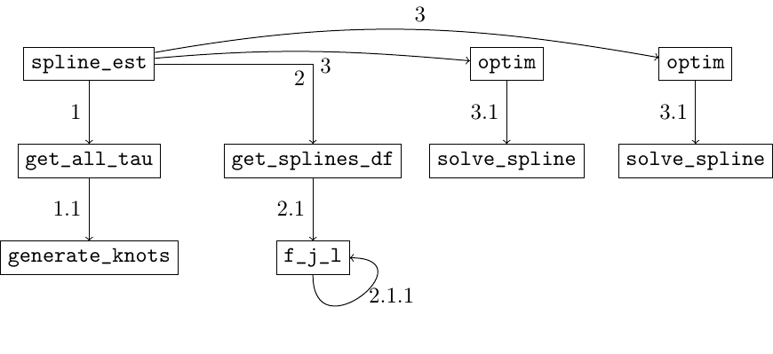
spline_est and the functions it calls.
The semivariogram estimate can be computed from an autocovariance
function estimate estCov, either a numeric vector or a CovEsts
S3 object, as per (1), using the command
to_vario(estCov) .The partial autocorrelation for any estimated autocovariance or
autocorrelation function estCov, either a numeric vector or a
CovEsts S3 object, can be computed using
to_pacf(estCov) .Block bootstrap can be performed using the following command
block_bootstrap(X, maxLag, x = 0:length(X), n_bootstrap = 100,
l = ceiling(length(X)^(1/3)), estimator = standard_est,
type = c("autocovariance", "autocorrelation"), alpha = 0.05,
boot_type = c("moving", "circular"), parallel = FALSE,
ncores = parallel::detectCores() - 1, cl_export = NULL,
boot_seed = NULL, cl = NULL, ...) ,where n_bootstrap is the number of times to run block bootstrap, l
is the block length, estimator is the estimator function one wishes to
use, where estimator (4) is chosen by default, alpha
is the level of significance for the pointwise confidence intervals,
boot_type is either ’moving’ or ’circular’. This function supports
parallelism, see Table 2 for the relevant parameters.
"..." are any other parameters that are to be passed into
estimator. The parallelism is performed over n_bootstrap iterations.
Several standard kernels, symmetric kernels and window functions available in the literature are realised in the package. We also provided the option for user-defined kernels, symmetric kernels, window functions and symmetric window functions. Tables 3 and 4 provide lists of the main available kernels and window functions in the package. The symmetric kernels and symmetric window functions will be mentioned only briefly, as they are modifications of the main kernels.
| Kernel Name | Equation \(a(x; \theta, \nu, d, \alpha, \beta)\) | Constraints |
|---|---|---|
gaussian |
\(\exp(-x^{2} / \theta)\) | |
exponential |
\(\exp(-x / \theta)\) | |
wave |
\(\begin{cases} \frac{\theta}{x} \sin(x / \theta), & x \neq 0 \\ 0, & x = 0 \end{cases}\) | |
rational_quadratic |
\(1 - {x^{2}}/{(x^{2} + \theta)}\) | |
spherical |
\(\begin{cases} 1 - {3x}/{(2\theta)} + \left( {x}/{\theta} \right)^{3}/2, & x < \theta \\ 0, & \text{otherwise} \end{cases}\) | |
circular |
\(\begin{cases} \frac{2}{\pi}\arccos\left( {x}/{\theta} \right) - \frac{2x}{\pi\theta} \sqrt{ 1 - \left( {x}/{\theta} \right)^{2} }, & x < \theta \\ 0, & \text{otherwise} \end{cases}\) | |
matern |
\(\left(\sqrt{2\nu} {x}/{\theta}\right)^{\nu} \left(2^{\nu - 1} \Gamma(\nu)\right)^{-1} K_{\nu}(\sqrt{2\nu} {x}/{\theta})\) | \(\nu > 0\) |
bessel_j |
\(2^{\nu} \Gamma(\nu + 1) J_{\nu}(x / \theta) (x / \theta)^{-\nu}\) | \(\nu \geq d/2 -1\) |
cauchy |
\((1 + (x / \theta)^{\alpha})^{-(\beta / \alpha)}\) | \(\alpha \in (0, 2], \beta \geq 0\) |
The kernel and window functions are called through
kernel_ec(x, name = c("gaussian", "exponential", "wave", "rational_quadratic",
"spherical", "circular", "bessel_j", "matern", "cauchy"), params=c(1)) ,
kernel_symm_ec(x, name = c("gaussian", "wave", "rational_quadratic", "bessel_j"),
params=c(1)) ,
window_ec(x, name = c("tukey", "triangular", "sine", "power_sine", "blackman",
"hann_poisson", "welch"), params=c(1)) ,
window_symm_ec(x, name = c("tukey", "triangular", "sine", "power_sine", "blackman",
"hann_poisson", "welch"), params=c(1)) ,where the parameters are given in the formulas in Tables 3 and 4.
The symmetric kernels (gaussian, wave, rational_quadratic and
bessel_j) are symmetric versions of the kernels in
Table 3, but
they are standardised so that their area is 1. For the symmetric window
functions, all options are the same as the window functions, however,
they are defined as \(1 - w(\left|x\right|;a)\) for \(x \in [-1, 1]\) and
\(0\) elsewhere, where \(w(x;a)\) is a window function. For kernel_ec, its
argument x is nonnegative, for kernel_symm_ec and window_symm_ec,
their arguments x can be negative, and for window_ec, it must be
within 0 and 1.
| Kernel Name | Equation \(w(x; a)\) | Constraints |
|---|---|---|
tukey |
\(\frac{1}{2} - \frac{1}{2} \cos(\pi x)\) | |
triangular |
\(x\) | |
sine |
\(\sin(\pi x / 2)\) | |
power_sine |
\(\sin^{a}(\pi x / 2)\) | \(a > 0\) |
blackman |
\(( (1 - a) / 2) - \frac{1}{2} \cos(\pi x) + \frac{a}{2} \cos(2 \pi x)\) | \(\left|a\right| \leq 0.25\) |
hann_poisson |
\((1/2) (1 - \cos(\pi x)) \exp( - (a \left|1 - x \right|) )\) | \(a \in \mathbb{R}\) |
welch |
\(1 - (x - 1)^2\) |
The package offers several functions to deal with the potential issues in the estimated autocovariance functions, which were discussed in Section 2. These corrections can be applied to any given autocovariance estimate. A general method to correct any estimator is provided by (9) and is called as
kernel_est(estCov, kernel_name = c("gaussian", "exponential", "wave",
"rational_quadratic", "spherical", "circular", "bessel_j", "matern", "cauchy"),
kernel_params = c(), N_T = 0.1 * length(estCov), maxLag = length(estCov) - 1,
x = 0:length(X), type = c("autocovariance", "autocorrelation"),
custom_kernel = FALSE) ,where kernel_name and kernel_params are given in
Table 5, N_T
is the rate at which the kernel function vanishes and is recommended to
be of order \(0.1 N\) when considering all lags (Yaglom 1987, sec. 3.17).
As with splines_est, estCov can be a numeric vector or a
CovEsts S3 object, obtained from another autocovariance estimator.
| Parameter | Explanation |
|---|---|
x |
A vector or matrix of arguments of at least length 1. |
name |
The name of the kernel. Options are: gaussian, exponential, wave, rational_quadratic, spherical, circular, bessel_j, matern, and cauchy. |
params |
A vector of parameters for the kernel. See Table 3 for the position of the parameters. All kernels will have a scale parameter as the first value in the vector. |
| Return | A vector of values. |
In addition to this, kernel-corrected versions of (3) and (4) are provided, called by
corrected_est(X, kernel_name = c("gaussian", "exponential", "wave",
"rational_quadratic", "spherical", "circular", "bessel_j", "matern", "cauchy"),
kernel_params = c(), N_T = 0.1 * length(X), pd = TRUE, maxLag = length(X) - 1,
x = 0:(maxLag - 1), type = c("autocovariance", "autocorrelation"),
meanX = mean(X), custom_kernel = FALSE) ,where the parameters are the same as for kernel_corrected_est with the
addition of having a positive-definite estimator. If a custom kernel is
used that is not positive-definite, then the estimator will no longer be
positive-definite. For both kernel correction estimators, unlike the
kernel regression estimators (recall estimators (5) and
(6)), the custom kernel is not required to have the
properties of a symmetric probability density.
The function that computes the taper corrected estimator (7) is called as
tapered_est(X, rho, window_name = c("tukey", "triangular", "sine", "power_sine",
"blackman", "hann_poisson", "welch"), window_params = c(1),
maxLag = length(X) - 1, x = 0:length(X),
type = c("autocovariance", "autocorrelation"), meanX = mean(X),
custom_window = FALSE) ,where \(\texttt{rho} \in (0, 1]\) is a scale parameter, window_ec and
window_params are given in Table 4, and the option custom_window serves the same
purpose as custom_kernel. For the custom window function, it should be
a nondecreasing function on \([0, 1]\) with \(w(0) = 0\) and \(w(1) = 1.\)
The remaining groups in Figure 1 fall into two categories, helper functions and Metric Functions. Helper functions are used during autocovariance function estimation, whilst metric functions are used to compare estimated autocovariance functions, which will be discussed in the next subsection.
The helper functions are further split into two categories, Helper Functions and General Functions. The discussion of the Helper Functions is omitted as these functions exist only for auxiliary calculations. General Functions can also be useful for other applications, for example, the forward and inverse type-II discrete cosine transforms can be called the following functions
dct_1d(X) ,
idct_1d(X) ,where X is a vector of values for which the discrete cosine transform
is being computed.
Also, one can make any estimator positive-definite by using the positive-definite corrections from Section 2. In the package, the first correction method (see Section 2 (i)) can be called by the function
make_pd(x, method.1 = TRUE) ,where x can be either a numeric vector of estimated autocovariance
values or a CovEsts S3 object generated by one of the other
autocovariance functions. If the second correction (see Section
2 (ii)) is to be done, method.1 = FALSE is used
instead.
Another method to make an estimated autocorrelation function positive-definite is to use linear shrinking, recall (11), which can be computed using
shrinking(estCov, return_matrix = FALSE, target = NULL) ,where estCov is an estimated autocovariance or autocorrelation
function, either a numeric vector or a CovEst S3 object,
return_matrix is a boolean, determining if the shrunken matrix is to
be returned or not. The default value returns a shrunken autocorrelation
function instead of an autocorrelation matrix. target is the target
matrix, which defaults to the identity matrix.
For a matrix \(\boldsymbol{\mathbf{A}}\) that is not necessarily positive-definite, the following procedure can be used to find the nearest positive-definite matrix (Higham 1988, Th. 2.1). First, a new matrix is constructed, \(\boldsymbol{\mathbf{B}} = \left(\boldsymbol{\mathbf{A}} + \boldsymbol{\mathbf{A}}^{T} \right)\) and then compute the polar decomposition \(\boldsymbol{\mathbf{B}} = \boldsymbol{\mathbf{U}} \boldsymbol{\mathbf{H}},\) where \(\boldsymbol{\mathbf{U}}\) is an orthogonal matrix and \(\boldsymbol{\mathbf{H}}\) is a positive-definite matrix. The nearest positive-definite matrix to \(\boldsymbol{\mathbf{A}}\) is then \(\boldsymbol{\mathbf{A}}_{F} = \left(\boldsymbol{\mathbf{B}} + \boldsymbol{\mathbf{H}}\right) / 2 .\) The function that computes this matrix is called using
nearest_pd(X, return_matrix = FALSE) ,where X is either a numeric vector, a numeric square matrix or a
CovEsts S3 object. If a numeric vector or CovEsts is
supplied, a matrix similar to (12) will be constructed
where \(D(\cdot)\) is replaced by X or the autocovariance values within
the CovEsts object.
Six Metric Functions are provided in the package to compare different autocovariance estimates.
For two continuous autocovariance function estimates, \(\widehat{C}_{1}(\cdot)\) and \(\widehat{C}_{2}(\cdot)\), the area between them can be expressed as \(\int_{0}^{h_{n}} \left| D(h) \right| \, \text{d}h ,\) where \(D(h) = \widehat{C}_{1}(h) - \widehat{C}_{2}(h)\) and \(h_{n}\) denotes the maximum lag at which the functions are estimated up to. However, as the estimates are computed on a discrete grid, the integral is approximated using the trapezoid rule, that is, \[\int_{0}^{h_{n}} \left| D(h) \right| \, \text{d}h \approx \sum_{i = 1}^{n} \frac{\left| D(h_{i - 1}) \right| + \left| D(h_{i}) \right|}{2} (h_{i} - h_{i-1}) ,\] where the estimates are given over the set of lags \(\{h_{0} , h_{1} , \dots , h_{N - 1}, h_{n} \},\) and \(h_{0}\) is assumed to be 0.
The area between two estimated autocovariance functions can be calculated as
area_between(estCov1, estCov2, lags = c(), plot = FALSE) ,where estCov1 and estCov2 are estimated values of autocovariance
functions given over the same set of lags, either numeric vectors or
CovEsts S3 objects. The parameter lags is optional and defaults
to a vector starting at 0, increasing by 1 until length(estCov1).
Another optional parameter, plot, determines whether a plot should be
created showing the area between the two estimated autocovariance
functions (for example, see
Figure 9).
The maximum distance can be expressed as follows, \(\sup_{h \in [0, h_{n}]} \left| D(h) \right| ,\) where \(\sup\) is replaced by \(\max\) over the set of lags in the discrete case.
The spectral norm is the largest eigenvalue of the matrix
\[\begin{equation} \begin{bmatrix} \label{mat:spec_norm} D(h_{0}) & D(h_{1}) & \cdots & D(h_{n - 1}) & D(h_{n}) \\ D(h_{1}) & D(h_{0}) & \cdots & D(h_{n - 2}) & D(h_{n - 1}) \\ \vdots & \vdots & \ddots & \vdots & \vdots \\ D(h_{n - 1}) & D(h_{n - 2}) & \cdots & D(h_{0}) & D(h_{1}) \\ D(h_{n}) & D(h_{n - 1}) & \cdots & D(h_{1}) & D(h_{0}) \\ \end{bmatrix} . \end{equation} \tag{12}\]
The maximum vertical distance and spectral norm have similar arguments
to area_between and are called as
max_distance(est1, est2, lags = c(), plot = FALSE) ,
spectral_norm(est1, est2) ,where the plot for the maximum distance shows the magnitude of the
vertical distances for each lag, see an example in
Figure 10. Like with area_between, estCov1 and
estCov2 are estimated values of autocovariance functions given over
the same set of lags, either numeric vectors or CovEsts S3
objects, which is the case for all metric functions.
The Hilbert-Schmidt metric for the matrix (12) is defined as \(\sqrt{\sum_{i,j= 1}^{n} d_{i,j}^{2}}\) and can be called as
hilbert_schmidt(est1, est2) .The closely related mean-square error/difference (MSE) between two estimated autocovariance functions is given by \(n^{-1} \sum_{i = 0}^{n} D(h_{i})^{2} .\) If the estimate is to be compared against a theoretical model, \(\widehat{C}_{2}(\cdot)\) can be replaced with the corresponding theoretical autocovariance function. The MSE can be called as
mse(est1, est2) .To check that the autocovariance function estimate is positive-definite, first one can construct a covariance matrix that is similar to (12), where \(\widehat{C}(\cdot)\) replaces \(D(\cdot).\) Then, if all eigenvalues of this matrix are positive, the estimate is positive-definite. This can be checked by using the function
check_pd(est) ,where est is a vector of numeric values of an estimated autocovariance
function or a CovEsts S3 object.
This section provides an example utilisation of some main functions and
computational time and memory usage analysis. It will demonstrate
applications of the estimators to a simulated data set, the
sunspot.year data set in the datasets package and unemployment
data from the US Bureau of Labor Statistics.
The typical usage of the kernel and window functions, defined only for
nonnegative values of their argument x (in the window_ec case, it is
further restricted to the interval \([0, 1]\)) is as follows:
library(CovEsts)
x <- c(0.2, 0.4, 0.6)
theta <- 0.9
kernel_ec(x, "gaussian", c(theta))
[1] 0.9565287 0.8371284 0.6703200
nu <- 1
dim <- 1
kernel_ec(x, "bessel_j", c(theta, nu, dim))
[1] 0.9938398 0.9755110 0.9454638
window_ec(x, "tukey")
[1] 0.0954915 0.3454915 0.6545085
window_ec(x, "blackman", c(0.16))
[1] 0.04021286 0.20077014 0.50978714When using the bessel_j option, the dimension dim is passed, and the
function additionally verifies that the kernel is valid for the
specified dimension and parameters. For the Blackman window function,
one should use \(\left| a \right| \leq 0.25\) to ensure that it is
nondecreasing on \([0, 1].\)
kernel_symm_ec and window_symm_ec are called in a similar way to
kernel_ec and window_ec, but can be applied to negative values of
x, for example,
x <- c(-0.4, -0.2, 0, 0.2, 0.4)
kernel_symm_ec(x, "gaussian", c(theta))
[1] 0.4978470 0.5688553 0.5947080 0.5688553 0.4978470
window_symm_ec(x, "blackman", c(0.16))
[1] 0.7992299 0.9597871 1.0000000 0.9597871 0.7992299Figures 3, 4, 5 and 6 plot examples of the main available kernels, symmetric kernels, window functions, and symmetric window functions, respectively.
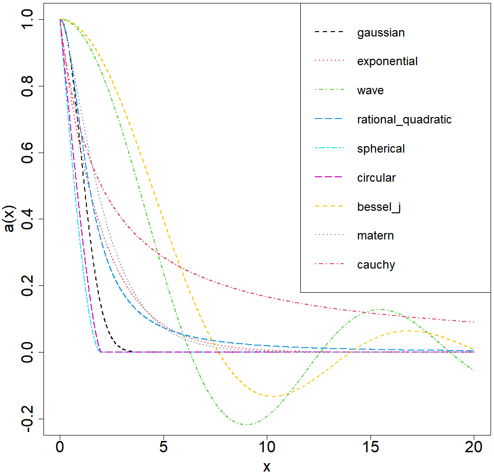
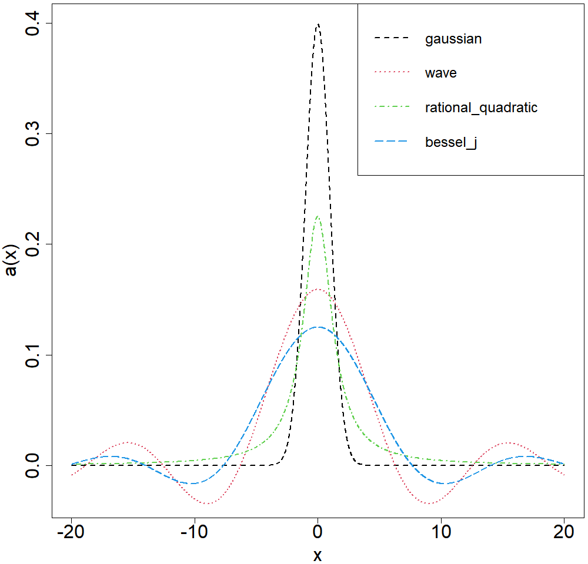
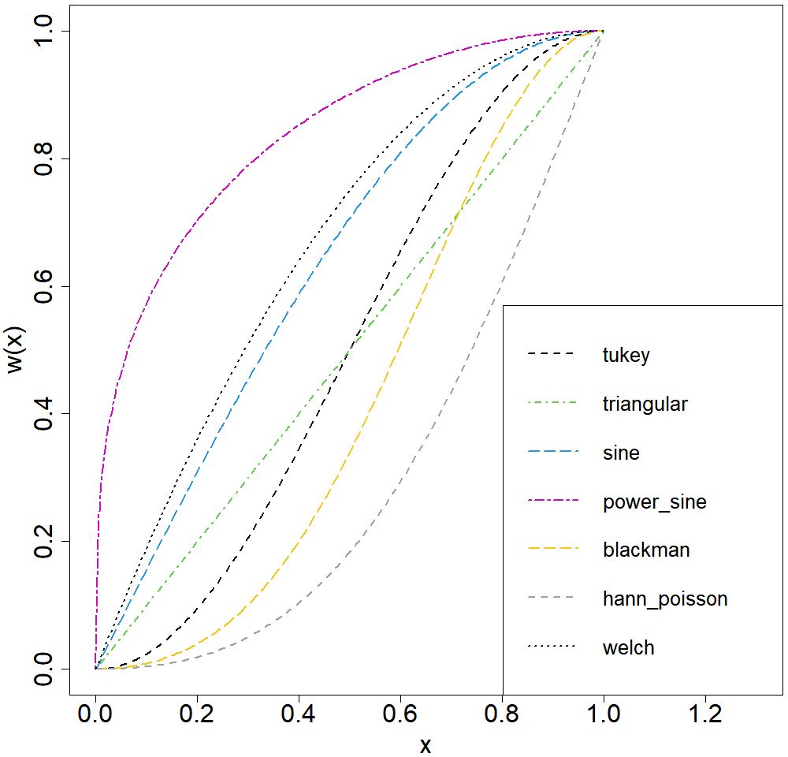
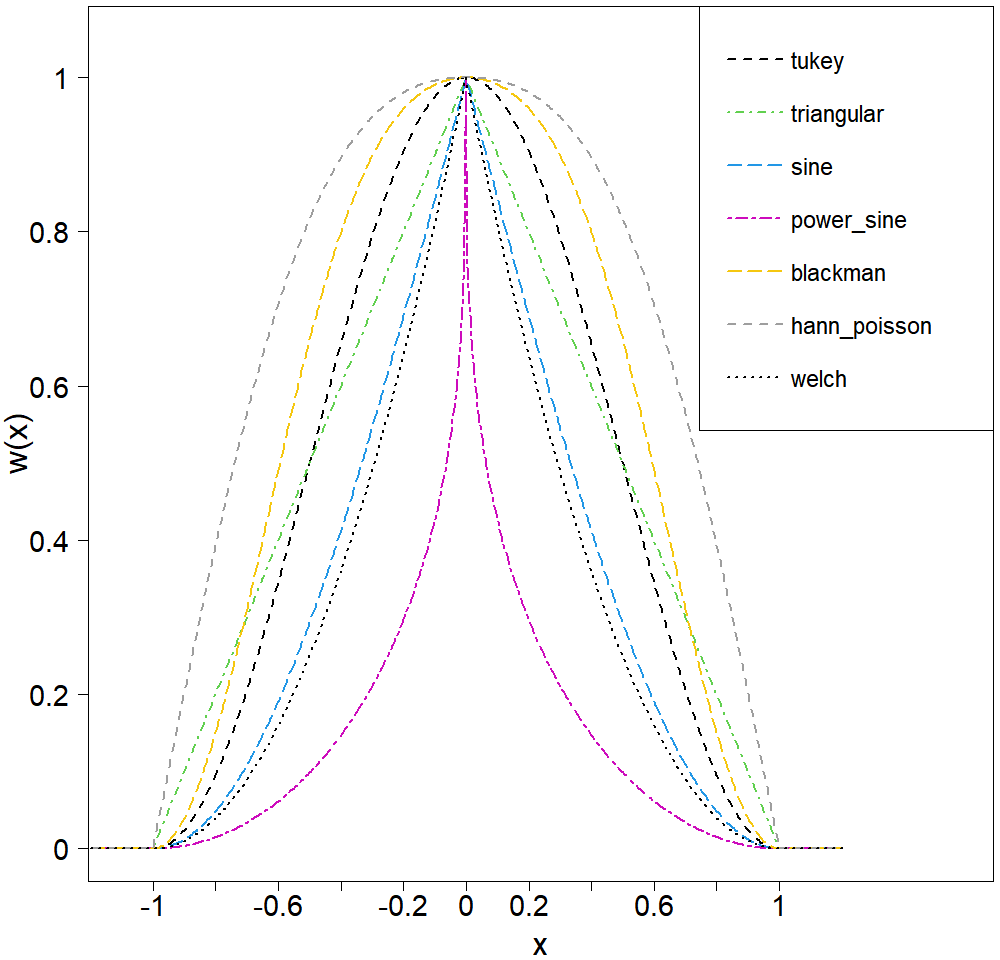
To illustrate the application of the estimators and their accuracy, we will consider a simulated Gaussian time series on a uniform grid on \([0, 40]\) with a spacing of \(0.02,\) having a short-range dependent Gaussian autocovariance model, \(\exp(-x^2)\). We will only estimate the autocovariance function to a lag of 5, to use the recommended 10-20% of total samples (Yaglom 1987, sec. 3.17).
The realisations were generated using the approach based on eigendecomposition of the autocovariance matrix. Below is the code to simulate the process and obtain the estimates based on the realisation in Figure 7, which are then plotted in Figure 8.
set.seed(135)
N <- 2001
x <- seq(0, 40, length.out = N)
Z <- rnorm(N)
dist_mat <- abs(outer(x, x, '-'))
cov_mat <- exp(- (dist_mat^2))
eig <- eigen(cov_mat)
X <- as.vector((eig$vectors %*% sqrt(diag(zapsmall(eig$values)))) %*% Z)
maxLag <- 251
t <- x[1:maxLag]
# standard estimators
Cs <- standard_est(X, maxLag = maxLag - 1, pd = FALSE, x = x)
Css <- standard_est(X, maxLag = maxLag - 1, pd = TRUE, x = x,
type = "autocorrelation")
# Hall's estimators
hall_1 <- adjusted_est(X, x, t, 0.1, "gaussian", type = "autocorrelation")
hall_2 <- truncated_est(X, x, t, 3, 4, 0.1, "gaussian", type = "autocorrelation")
# tapered
tapered <- tapered_est(X, 1, "tukey", maxLag = maxLag - 1, x = x,
type = "autocorrelation")
# splines
splines <- splines_est(X, x, Cs, 3, 2, maxLag = maxLag - 1, type = "autocorrelation")
Cs <- normalise_acf(Cs)
# Correction
corrected <- corrected_est(X, "gaussian", N_T=5*length(X), maxLag = maxLag - 1, x = x,
type = "autocorrelation")
# Plot
par(mar=c(4,5.25,0.25,0.25)+.1)
plot(x[1:maxLag], exp(-x[1:maxLag]^2), type='l', lwd=2, ylim=c(-0.3, 1),
xlab=expression(h), ylab=expression(hat(rho)*'(h)'), cex.axis=2,
cex.lab=2)
lines(Cs, lwd=3, lty=2, col=2)
lines(Css, lwd=3, lty=3, col=3)
lines(hall_1, lwd=3, lty=4, col=4)
lines(hall_2, lwd=3, lty=5, col=6)
lines(tapered, lwd=3, lty=6, col=7)
lines(splines, lwd=3, lty=7, col=8)
lines(corrected, lwd=3, lty=8, col=13)
legend('topright', c('True', expression(hat('C')^'*'*'(h)'),
expression(hat('C')^'**'*'(h)'), expression(hat('C')[H]*'(h)'),
expression(hat('C')[1]*'(h)'), expression(hat('C')[N]^'a'*'(h)'),
expression(hat('C')^'B'*('h')), expression('C'[T]^'(a)'*'(h)')),
col=c(1, 2, 3, 4, 6, 7, 8, 13), lty=c(1, 2, 3, 4, 5, 6, 7, 8),
lwd=c(2, rep(3, 7)), y.intersp=1, cex=2, ncol = 2)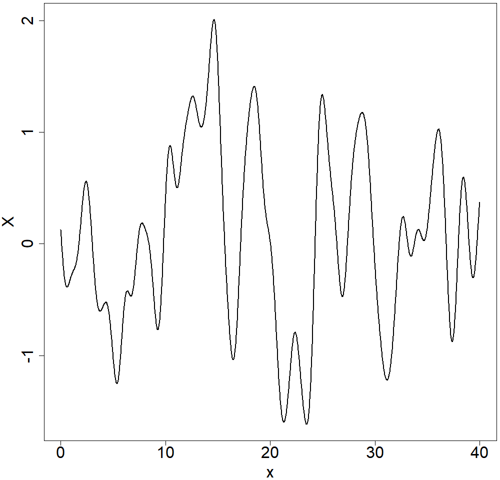
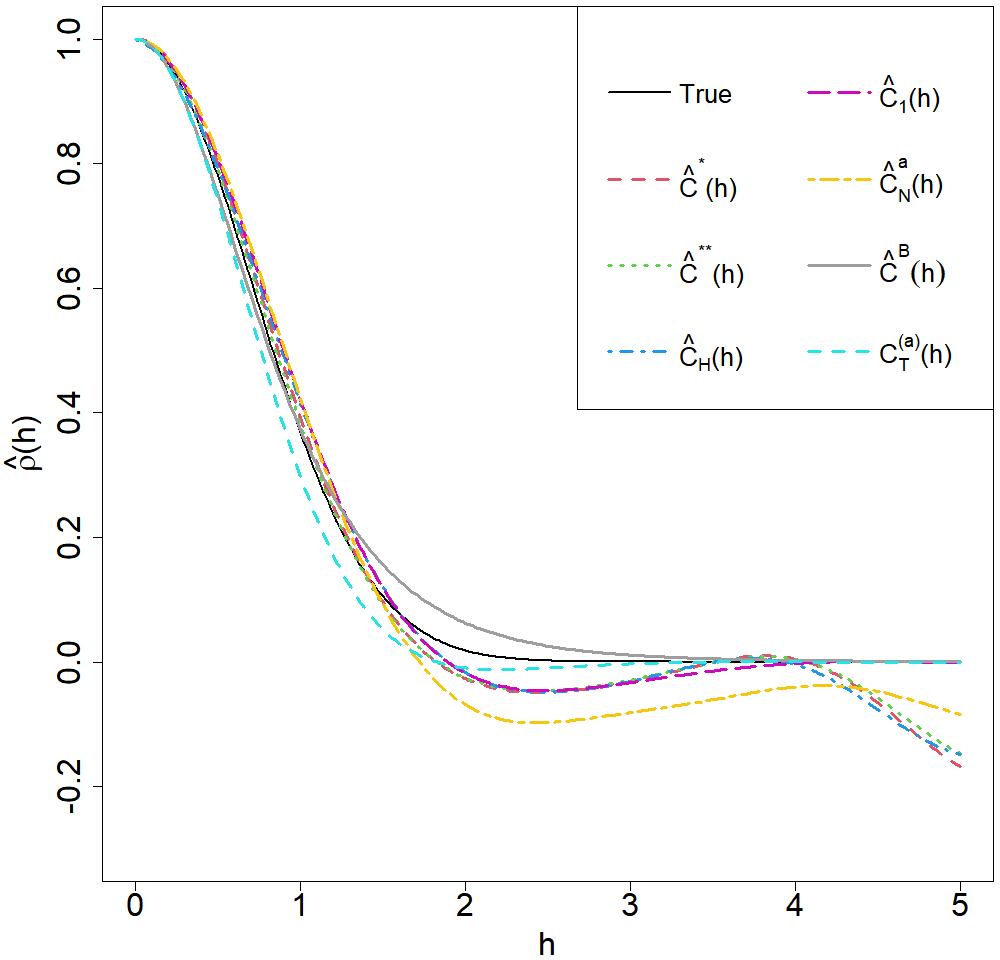
Whilst for short distances, the majority of the estimated autocorrelation functions are consistent and adequately reflect the true autocorrelation function, it is clear that for increasing distances the waves start to overwhelm the estimators, seen in Figure 8. The waves are eliminated when applying the estimators \(\widehat{C}_{1}(h)\) and \(C_{T}^{(a)}(h),\) given by (6) and (10), respectively.
For this and the following examples, we consider the estimated autocorrelation functions instead of the estimated autocovariance functions to allow for easier comparison.
Figure 9 plots the area (in grey) between estimators given by (5) (red) and (6) (green). As the green curve is forced to zero after \(h=4,\) the area between the two estimates increases after that point. The estimated area between them is approximately 0.061. This difference can also be seen in the plot of distances between the two estimates in Figure 10. For \(h < 3,\) the estimates are rather close. However, the distance starts to increase after this point dramatically. The maximum distance between the two estimates is 0.1. These values and plots can be produced as follows:
area_between(hall_1, hall_2, plot=T)
max_distance(hall_1, hall_2, plot=T)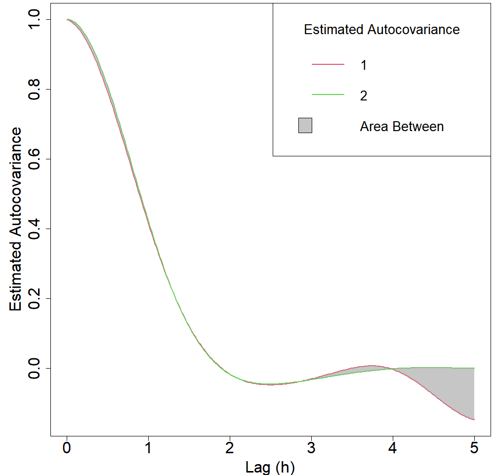
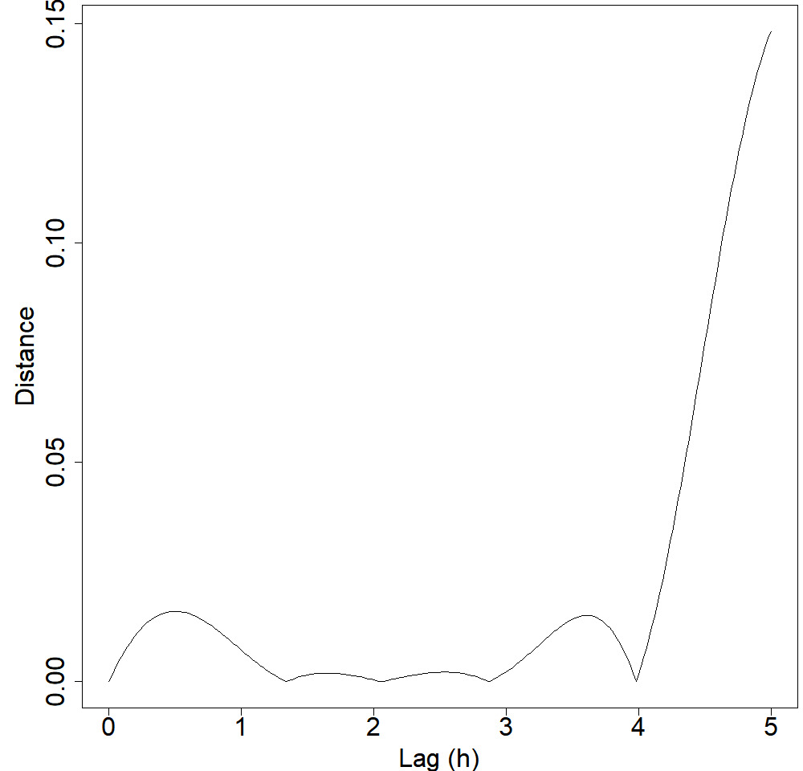
To compute the moving block and circular bootstrap for estimator (4), one can use the following commands
plot(block_bootstrap(X, maxLag, x, l = maxLag), ylim=c(-0.25, 1), cex.axis=2, cex.lab=2)
plot(block_bootstrap(X, maxLag, x, l = maxLag, boot_type = 'circular'),
ylim=c(-0.25, 1), cex.axis=2, cex.lab=2)Figures 11 and
12 show graphical outputs from the
block_boostrap function, where the autocovariance functions are
plotted. The solid black line is the estimated autocovariance function,
the red dashed line is the average bootstrap autocovariance function,
and the grey shaded bootstrap 95% confidence region is calculated
pointwise for each lag. Both bootstrap estimates give similar results,
with the bootstrap estimate lessening constant summation effects,
compared to the original estimate that dips after lag 4.
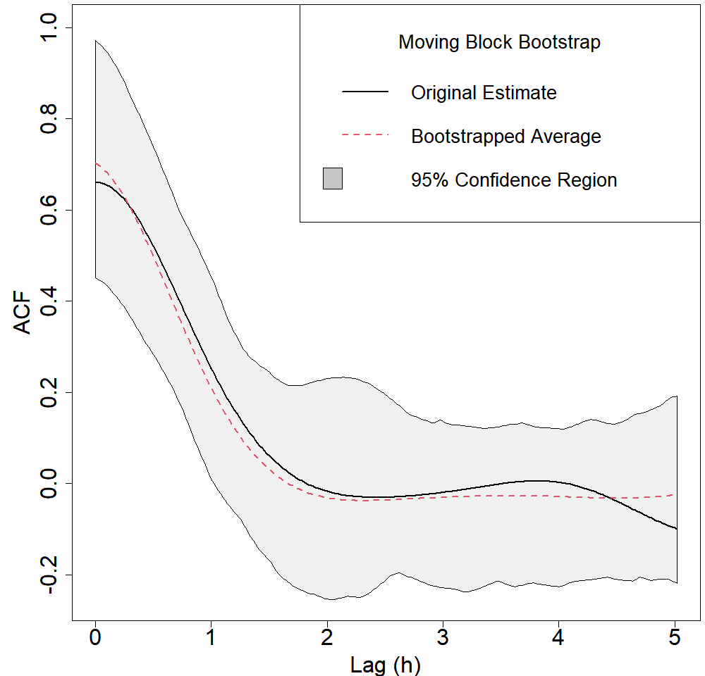
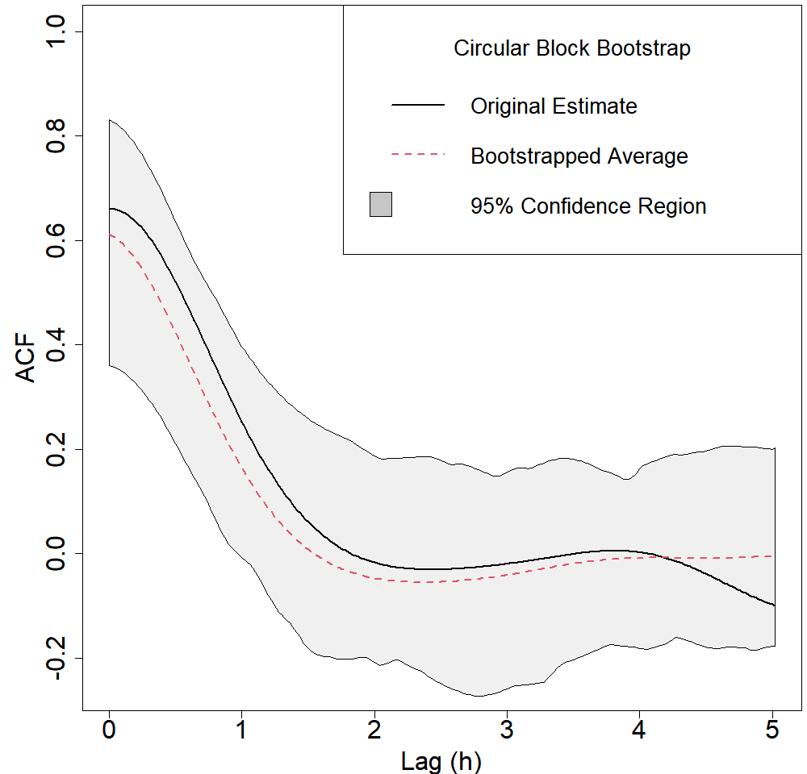
This example uses the classical yearly sunspot count data from 1700 to
1988, sunspot.year, available in the datasets R package. This data
gives the number of observed yearly sunspots, seen in
Figure 13. It has been shown that the number of
sunspots exhibits long-range dependent and cyclic behaviours, see
Gil-Alana (2009) and Hu et al. (2009), with an approximate 11-year
cycle. So, one should expect to see periodicity in the autocovariance
estimate at multiples of lag 11. The example demonstrates that
estimator (6) has potential issues as its Fourier
transform at the corresponding second nonzero frequency takes a negative
value. So, only one nonzero frequency can be used to obtain the
corrected estimates. Thus, this positive-definite adjustment will not
produce any useful result and is not reported. Instead, it is replaced
with the non-positive-definite version of estimator (5),
denoted by \(\widehat{C}_{H}^{1}(h)\) in the legend of
Figure 15. The splines estimator will also be omitted as
it does not capture the cyclicality in the autocovariance function.
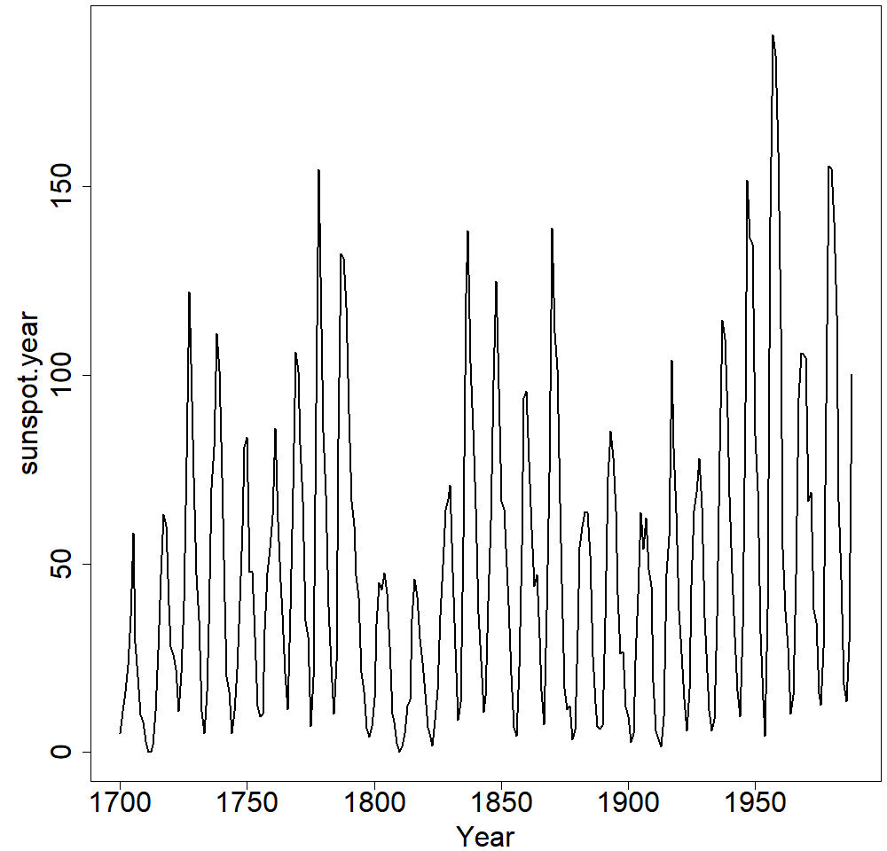
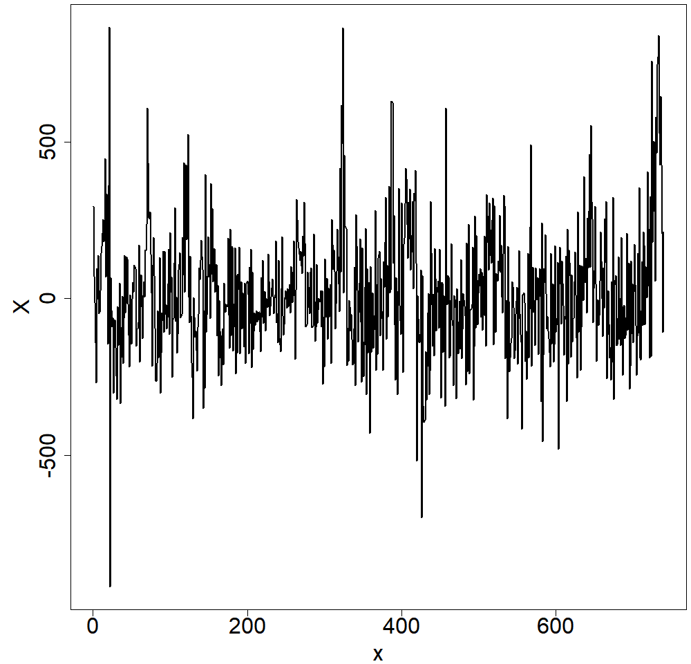
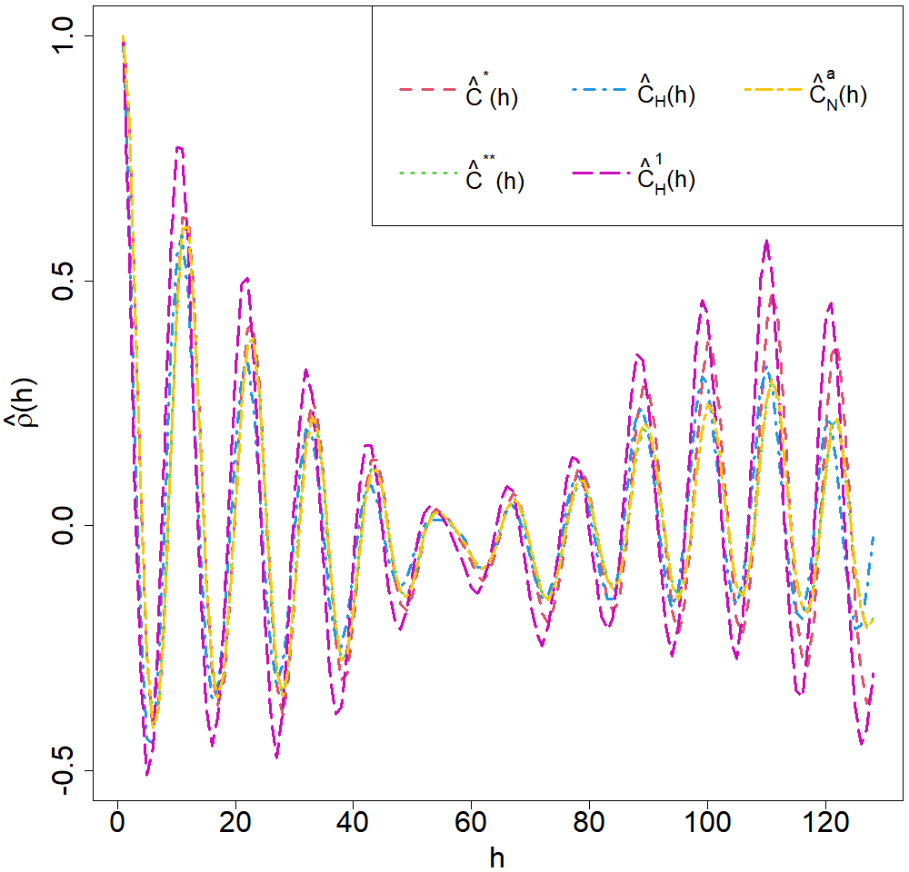
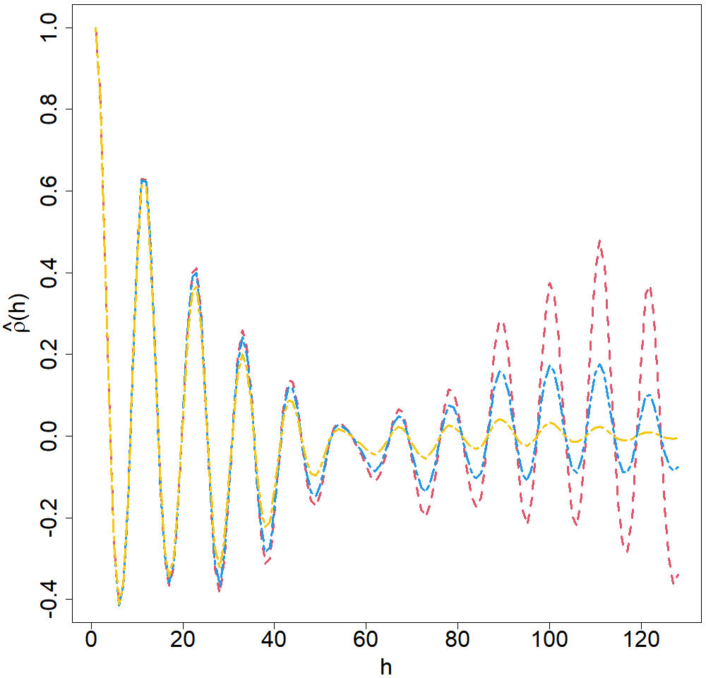
X <- as.vector(sunspot.year)
x <- 1:length(X)
maxLag <- 128
# standard estimators
Cs <- standard_est(X, maxLag = maxLag - 1, pd = FALSE, meanX = mean(X), x = x,
type = "autocorrelation")
Css <- standard_est(X, maxLag = maxLag - 1, pd = TRUE, meanX = mean(X), x = x,
type = "autocorrelation")
# Hall's estimators
hall_1 <- adjusted_est(X, x, x[1:maxLag], b = 0.1, kernel_name = "wave",
type = "autocorrelation")
hall_2 <- adjusted_est(X, x, x[1:maxLag], b = 0.1, kernel_name = "wave", pd = FALSE,
type = "autocorrelation")
# tapered
tapered <- tapered_est(X, 0.01, "tukey", maxLag = maxLag - 1, x = x,
type = "autocorrelation")
par(mar=c(4,5.25,0.25,0.25)+.1)
plot(Cs, lwd=3, lty=2, col=2, type='l', ylim=c(-0.5, 1), xlab=expression(h),
ylab=expression(hat(rho)*'(h)'), cex.axis=2, cex.lab=2)
lines(Css, lwd=3, lty=3, col=3)
lines(hall_1, lwd=3, lty=4, col=4)
lines(hall_2, lwd=3, lty=5, col=6)
lines(tapered, lwd=3, lty=6, col=7)
legend('topright', c(expression(hat('C')^'*'*'(h)'), expression(hat('C')^'**'*'(h)'),
expression(hat('C')[H]*'(h)'), expression(hat('C')[H]^'1'*'(h)'),
expression(hat('C')[N]^'a'*'(h)')), col=c(2, 3, 4, 6, 7),
lty=c(2, 3, 4, 5, 6), lwd=c(rep(3, 5)), y.intersp=1, cex=1.7, ncol=3)As shown in Figure 15, the estimators provide consistent results. However, since no seasonal adjustment or transformation was applied, the estimates may not correspond to the optimal model specification for these data.
We have provided an example of how waves can be reduced and eliminated from the estimates in Figure 16. The red line, the original estimate (computed using estimator (3)), behaves cyclically and has waves of larger amplitude as the estimation lag increases. The blue and yellow lines show the smoothing results by using the wave (with \(\theta = 50)\)) and Gaussian (with \(\theta = 4000\)) kernels, respectively. Such kernels were chosen to lessen constant summation and other unwanted effects and to bring the estimator to zero. The latter correction may be appropriate when short-range dependence is expected.
We use monthly changes in U.S. unemployment counts data studied by Artiach and Arteche (2011) and sourced from the U.S. Bureau of Labor Statistics https://www.bls.gov/. There are 739 months of observations in the time series plotted in Figure 14. We estimated the autocovariance function up to a lag of 144, representing a maximum difference of 12 years between observations. In Artiach and Arteche (2011), the periodogram of this time series has a nonzero singularity indicating cyclic long-memory, see Ayache et al. (2022), where each cycle is roughly 5.5 years. So, we should expect some cyclicality in the estimated autocovariance functions.
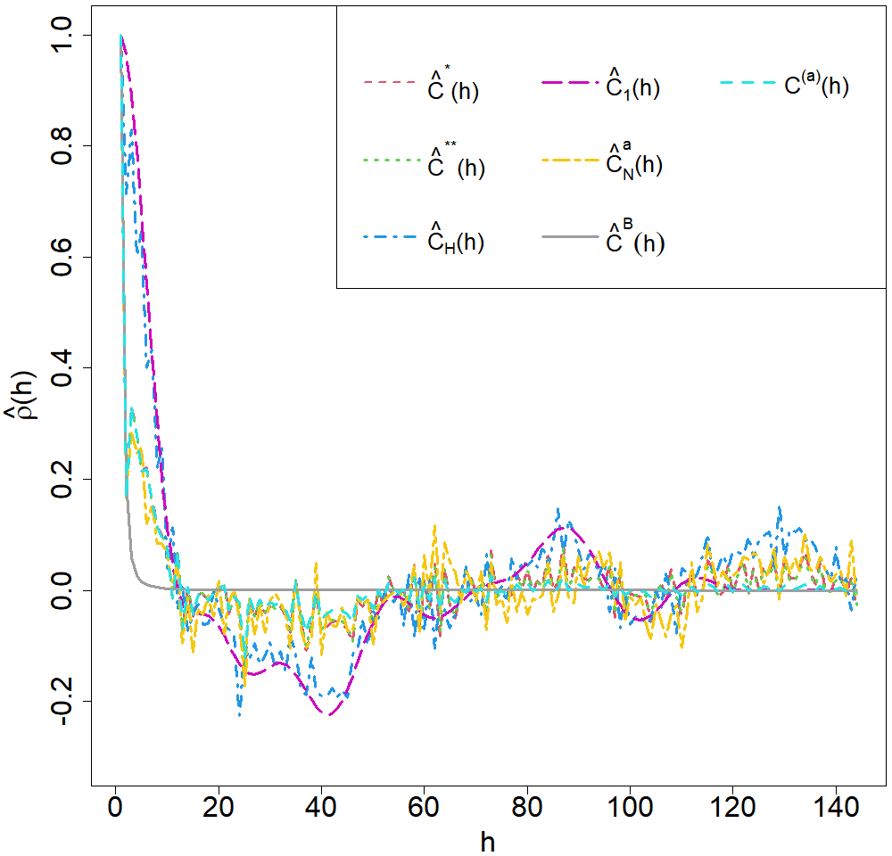
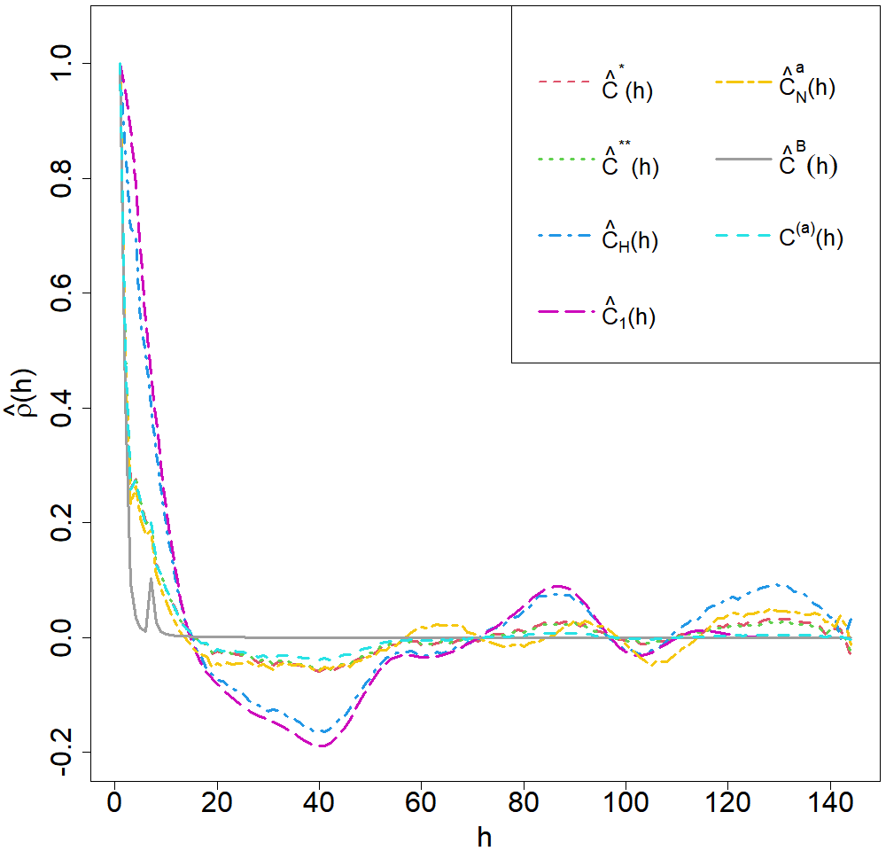
The following code produces the estimated autocorrelations plotted in Figure 17.
maxLag <- 144
X <- X_bls
x <- 1:length(X)
# standard estimators
Cs <- standard_est(X, maxLag = maxLag - 1, pd = FALSE, x = x)
Css <- standard_est(X, maxLag = maxLag - 1, pd = TRUE, x = x,
type = "autocorrelation")
# Hall's estimators
hall_1 <- adjusted_est(X, x, x[1:maxLag], b = 0.1, kernel_name = "rational_quadratic",
type = "autocorrelation")
hall_2 <- truncated_est(X, x, x[1:maxLag], 110, 120, b = 0.1,
kernel_name = "rational_quadratic", type = "autocorrelation")
# tapered
tapered <- tapered_est(X, 1, "tukey", maxLag = maxLag - 1, x = x,
type = "autocorrelation")
# splines
splines <- splines_est(X, x, Cs, 3, 2, maxLag = maxLag - 1, type = "autocorrelation")
Cs <- normalise_acf(Cs)
# Correction
corrected <- corrected_est(X, "rational_quadratic", N_T = 5*length(X), maxLag = maxLag - 1,
x = x, type = "autocorrelation")
colours <- c(2, 3, 4, 6, 7, 8, 13)
ltys <- c(2, 3, 4, 5, 6, 7, 8)
par(mar=c(4,5.25,0.25,0.25)+.1)
plot(Cs, lwd=3, lty=2, col=2, type='l', ylim=c(-0.3, 1), xlab=expression(h),
ylab=expression(hat(rho)*'(h)'), cex.axis=2, cex.lab=2)
lines(Css, lwd=3, lty=3, col=3)
lines(hall_1, lwd=3, lty=4, col=4)
lines(hall_2, lwd=3, lty=5, col=6)
lines(tapered, lwd=3, lty=6, col=7)
lines(splines, lwd=3, lty=7, col=8)
lines(corrected, lwd=3, lty=8, col=13)
legend('topright', c(expression(hat('C')^'*'*'(h)'), expression(hat('C')^'**'*'(h)'),
expression(hat('C')[H]*'(h)'), expression(hat('C')[1]*'(h)'),
expression(hat('C')[N]^'a'*'(h)'), expression(hat('C')^'B'*('h')),
expression('C'^'(a)'*'(h)')), col=colours, lty=ltys, lwd=c(2, rep(3, 6)),
y.intersp=1.2, cex=1.8, ncol=3)As can be seen from Figure 17, the estimates have local chaotic fluctuations. To better see the main pattern of the estimates, Figure 18 shows the application of a moving average to each of the estimators in Figure 17. After this smoothing, two estimators, (5) and (6), exhibit cyclicality expected for this data.
This example empirically investigates the computational complexity of the methods by evaluating the runtime and memory usage of the estimators. Autocovariance function estimates were computed for a sequence of simulated time series with Gaussian autocovariance, similar to Example 1. The realisations of the time series were simulated on uniform grids over \([0, 40]\) with lengths \(N=101, 151, \dots, 951, 1001\). This process was repeated 100 times, and the results presented are the medians.
Figure 19 shows the log10-time of the computed estimators. The log scale was used due to the large difference between estimators. For example, estimator (4) was computed in 0.000781015 seconds, on average, for a time series of length \(N = 1001,\) whilst estimator (5) was computed in 8.45674 seconds. It is clear that all estimators (3), (4), (7), and (10) perform similarly in terms of time, whilst Hall’s estimators (5) and (6) exhibit significant growth in computational time. The splines estimator (8) shows a consistent time usage across all estimates, exhibiting minimal growth as \(N\) increases.
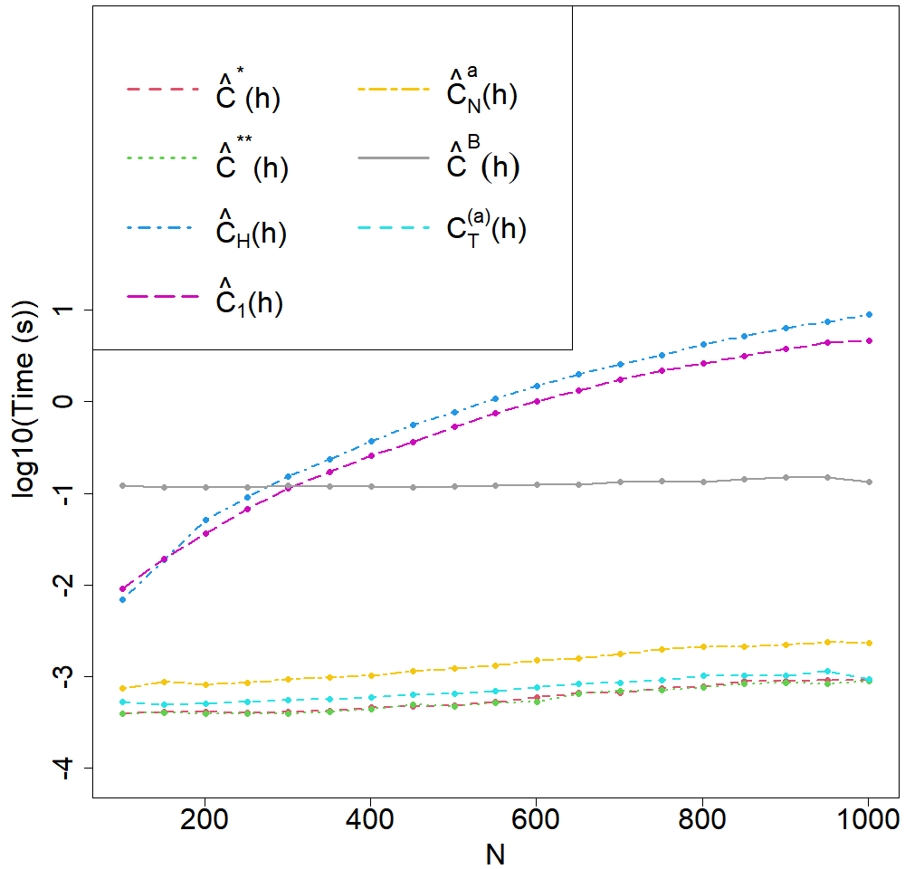
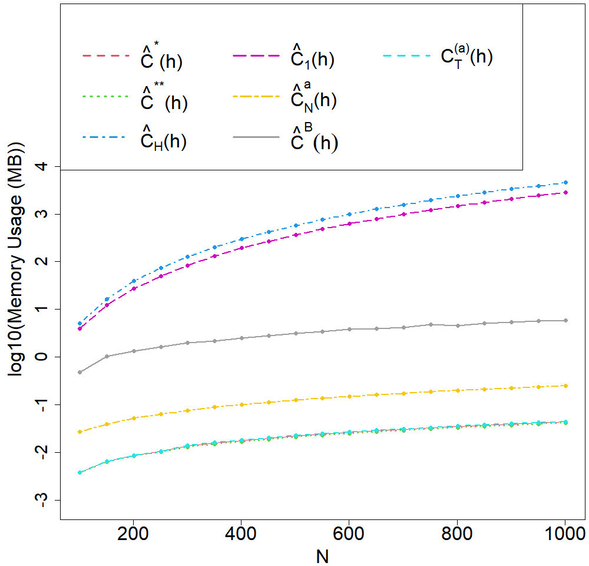
Figure 20 shows the log10-memory usage, where the log-scale was chosen for the same reasons as the time case. The estimators (3), (4), and (10) all effectively used the same memory. The estimator (7) is quite close, particularly in terms of growth; however, it is shifted upward. Again, Hall’s estimators (5) and (6) exhibit significantly greater memory usage growth than the other estimators. The splines estimator (8) is stable in terms of growth, as in the time case.
It is clear that Hall’s estimators, (5) and (6), require significantly more computational time and memory usage compared to other estimators. Thus, these estimators may not be appropriate in the case of Big Data. The other estimators are computed relatively quickly and require significantly less memory, even for large values of \(N.\) Further, these limitations should be considered when performing block bootstrap or other statistical procedures involving repeated computation of estimated covariances (e.g., moving window analysis, model diagnostics, Kriging/Gaussian process prediction and interpolation), as the estimator must be called many times. In such cases, using parallelism options, as implemented in the package for bootstrap, may substantially reduce computational time.
The article introduced the package CovEsts, which provides several nonparametric autocovariance function estimators available in the literature. The package offers a set of functions that allow users to easily apply the different estimators, as shown in the examples. The autocovariance estimator functions have a high level of flexibility with various options that the user can control, such as a custom kernel, selecting the sampling grid, and controlling the positive-definiteness of estimators, among others. Several functions are provided to generate bootstrap autocovariance confidence regions and to address potential issues in autocovariance estimation. In addition, various metrics are included to compare the performance of the estimators. In the future, the package is planned to be extended to work with similar nonparametric estimators for spatial data.
R version 4.5 was used to develop, test the package, and produce all outputs in this article.
This research was partially supported by the Australian Research Council Discovery Projects funding scheme (project DP220101680). Andriy Olenko was also partially supported by La Trobe University’s SCEMS CaRE and Beyond grant. The authors are grateful to Professors N. Cressie, N. Leonenko, and E. Porcu for their feedback on certain approaches to the nonparametric estimation of covariance functions. We also thank the editor, Prof. R. J. Hyndman, and anonymous reviewers for their comments that helped to improve the package and the paper.
Supplementary materials are available in addition to this article. It can be downloaded at RJ-2026-031.zip
TSA, astsa, sarima, forecast, CovEsts, ncf, gstat
AnomalyDetection, Econometrics, Environmetrics, Finance, MissingData, Spatial, SpatioTemporal, TimeSeries
This article is converted from a Legacy LaTeX article using the texor package. The pdf version is the official version. To report a problem with the html, refer to CONTRIBUTE on the R Journal homepage.
Text and figures are licensed under Creative Commons Attribution CC BY 4.0. The figures that have been reused from other sources don't fall under this license and can be recognized by a note in their caption: "Figure from ...".
For attribution, please cite this work as
Bilchouris & Olenko, "**CovEsts**: Nonparametric Autocovariance Estimation and Analysis", The R Journal, 2026
BibTeX citation
@article{RJ-2026-031,
author = {Bilchouris, Adam and Olenko, Andriy},
title = {**CovEsts**: Nonparametric Autocovariance Estimation and Analysis},
journal = {The R Journal},
year = {2026},
note = {https://doi.org/10.32614/RJ-2026-031},
doi = {10.32614/RJ-2026-031},
volume = {18},
issue = {2},
issn = {2073-4859},
pages = {1}
}